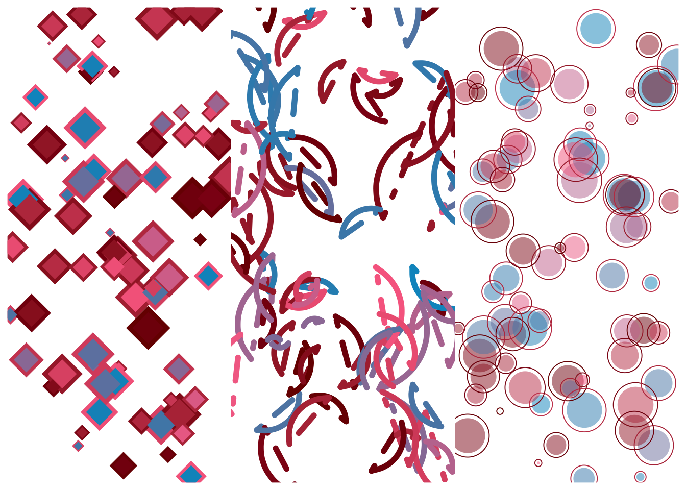

# loading packages
library(ggplot2) # making visualizations
library(tibble) # data representation
# color palettes
library(scales)
library(ggthemes)
# manage data frame and manipulation
library(dplyr)
library(tidyr)
# polygon tricks packages
library(purrr)
library(ambient)
library(tictoc)
library(gifski)
# pixel filters packages
library(ggforce)
library(ggfx)
library(flametree)
library(here)Generative Art Assignment
Getting Started
Exercise 1. Art is theft
mpg %>% # pipe data to plotting
ggplot(aes(cty, class, color = drv)) + # input data as base for art
geom_point(show.legend = FALSE, size = 4, shape = 8) + # creating star points
geom_point(show.legend = FALSE, size = 2, shape = 1) + # creating small circles around stars to make shape more interesting
theme_void() + # setting to empty theme
coord_polar() + # organizing points in a circle
scale_color_brewer(palette = "PuBuGn") # setting to color scheme from R Color BrewerExercise 2. Technique
polar_art <- function(seed, n, palette) {
set.seed(seed) # setting the state of the random number generator
dat <- tibble( # creating data frame of random values
x0 = runif(n), # creating random numbers for x0 column
y0 = runif(n), # creating random numbers for y0 column
x1 = x0 + runif(n, min = -1, max = 4), # creating random data for x1 column
y1 = y0 + runif(n, min = -4, max = 2), # creating random data for y1 column
shade = runif(n), # creating random data for shade column
size = runif(n)) # size column random data
dat %>% # creating plot with data from random data frame
ggplot(aes( # setting aesthetics for the plot
x = x0, # x-axis using data from x0 column
y = y0, # y-axis using data from y0 column
xend = x1, # end of line segment on x-axis
yend = y1, # end of line segment on y-axis
colour = shade, # setting color to shade column
linewidth = size, # setting line width to size column
)) +
geom_segment(show.legend = FALSE) + # plotting segments
coord_polar() + # organizing segments in circle
scale_y_continuous(expand = c(0.3, 4)) + # customizing scale of y axis
scale_x_continuous(expand = c(-1, 0)) + # customizing scale of x axis
scale_colour_gradientn(colours = palette) + # setting colors to created palette
scale_size(range = c(-1, 1)) + # scaling lines to designated range of size
theme_void() # setting minimalistic theme
}
polar_art( # using polar_art function to generate art
seed = 25, # setting seed
n = 100, # creating 100 lines
palette = c("lavender", "cornflowerblue", "pink")
) # creating blue, pink, and lavender color palette Exercise 3. Color
# calling simple_canva function to visualize outputs
sample_canva <- function(seed = NULL) {
if(!is.null(seed)) set.seed(seed)
sample(ggthemes::canva_palettes, 1)[[1]]
}
# displaying palette
show_col(sample_canva(seed = 41))# writing my own random palette generator
sample_named_colors <- function(n) { # creating a sample_named_colors that takes input n
colors(distinct = TRUE) # using list of 502 colors
return(sample(colors(distinct = TRUE), n, replace = FALSE)) # generates random sample of n colors from list
}
# running polar_art function with new function
polar_art(seed = 8, n = 30, palette = sample_named_colors(5))# creating vector of 600 distinct colors
colors_600 <- unlist(ggthemes::canva_palettes)
# creating palette generating function from set of 600
sample_600_colors <- function(seed = NULL, n = 4) {
if(!is.null(seed)) set.seed(seed) # using seed to randomly select colors
sample(colors_600, 4) # generate random colors from vector
}
show_col(sample_600_colors(seed = 4, n = 4)) # testing functionExercise 4. Composition
# using polar_styled_plots.R to explore flexibility in art generation
# function to sample canva palettes
sample_canva <- function(seed = NULL) {
if(!is.null(seed)) set.seed(seed)
sample(ggthemes::canva_palettes, 1)[[1]]
}
sample_data <- function(seed = NULL, n = 100){ # creating random data function
if(!is.null(seed)) set.seed(seed)
dat <- tibble( # generate data frome of n rows
x0 = runif(n),
y0 = runif(n),
x1 = x0 + runif(n, min = -.2, max = .2),
y1 = y0 + runif(n, min = -.2, max = .2),
shade = runif(n),
size = runif(n),
shape = factor(sample(0:22, size = n, replace = TRUE))
)
}
# function to generate polar styled plot
polar_styled_plot <- function(data = NULL, palette) {
ggplot( # base plot aesthetics
data = data,
mapping = aes(
x = x0,
y = y0,
xend = x1,
yend = y1,
colour = shade,
size = size
)) +
coord_polar(clip = "off") + # orient points in circular pattern
scale_y_continuous(
expand = c(0, 0),
limits = c(0, 1),
oob = scales::oob_keep
) +
scale_x_continuous(
expand = c(0, 0),
limits = c(0, 1),
oob = scales::oob_keep
) + # modify colors
scale_colour_gradientn(colours = palette) +
scale_size(range = c(0, 10)) +
theme_void() + # eliminate other plot elements
guides(
colour = guide_none(),
size = guide_none(),
fill = guide_none(),
shape = guide_none()
)
}
# polar styled plot first experimentation
dat1 <- sample_data(seed = 4, n = 100) # generate data
polar_styled_plot(dat1, palette = sample_canva(seed = 5)) +
geom_point(data = dat1 %>% mutate(size = size / 4)) + # decrease size
geom_segment(data = dat1, # create segment lines
lineend = "round", # with curved ends
linetype = "dotdash") # and dot dash patern # another polar styled plot
dat2 <- sample_data(seed = 13, n = 125) # create data
polar_styled_plot(dat2, palette = sample_canva(seed = 25)) +
geom_segment(data = dat2 %>% mutate(size = size * 2), # increase size
lineend = "round") + # curved end of lines
geom_segment(data = dat2 %>% mutate (size = size / 10), # decrease size
lineend = "round",
color = "white") + # make white
geom_point(data = dat2,
shape = 20) # plot rainbow points # creating my own styled plot function
my_styled_plot <- function(data = NULL, palette) {
ggplot(
data = data,
mapping = aes(
x = x0,
y = y0,
xend = x1,
yend = y1,
colour = shade,
size = size
)) +
scale_y_continuous(
expand = c(0, 0),
limits = c(0, 1),
oob = scales::oob_keep
) +
scale_x_continuous(
expand = c(0, 0),
limits = c(0, 1),
oob = scales::oob_keep
) +
scale_colour_gradientn(colours = palette) +
scale_size(range = c(0, 15)) +
theme_void() +
guides(
colour = guide_none(),
size = guide_none(),
fill = guide_none(),
shape = guide_none()
)
}
dat3 <- sample_data(seed = 3, n = 100)
my_styled_plot(dat3, palette = sample_canva(seed = 41)) +
geom_segment(data = dat3,
lineend = "round",
alpha = 0.7) +
geom_segment(data = dat3 %>% mutate(shade = shade * 2, size = size / 3),
lineend = "round",
linewidth = 3) +
geom_point(data = dat3 %>% mutate(x0 = x0 / 1.5, y0 = y0 * 1.5, x0 = x0 * 1.5, y1 = y1 * 1.5, size = size *1.5, shade = shade / 2),
shape = 21)c. Art of your choice: Polygon Tricks
Exercise 1. Semi Transparent Polygons
# data points for square
square <- tibble(
x = c(0, 1, 1, 0, 0),
y = c(0, 0, 1, 1, 0),
seg_len = c(1, 1, 1, 1, 0)
)
# generate polygon to distort
show_polygon <- function(polygon, show_vertices = TRUE, colour = "black", ...) {
pic <- ggplot(polygon, aes(x, y)) +
geom_polygon(fill = NA, colour = colour, show.legend = FALSE, ...) +
coord_equal() +
theme_void()
if(show_vertices == TRUE) {
pic <- pic + geom_point(size = 2, colour = colour)
}
return(pic)
}
# distort by breaking edges
sample_edge <- function(polygon) {
sample(nrow(polygon), 1, prob = polygon$seg_len)
}
# function to modify edge lengths
edge_length <- function(x1, y1, x2, y2) {
sqrt((x1 - x2)^2 + (y1 - y2)^2)
}
# function to change noise
edge_noise <- function(size) {
runif(1, min = -size/2, max = size/2)
}
# function to insert additional edges
insert_edge <- function(polygon, noise) {
# sample and edge and remember its length
ind <- sample_edge(polygon)
len <- polygon$seg_len[ind]
# one endpoint of the original edge
last_x <- polygon$x[ind]
last_y <- polygon$y[ind]
# other endpoint of the original edge
next_x <- polygon$x[ind + 1]
next_y <- polygon$y[ind + 1]
# storing new x and y axis data
# scaling noise to be proportional to change in edge length
new_x <- (last_x + next_x) / 2 + edge_noise(len * noise)
new_y <- (last_y + next_y) / 2 + edge_noise(len * noise)
# the new row for insertion into the tibble,
# containing coords and length of the 'new' edge
new_row <- tibble(
x = new_x,
y = new_y,
seg_len = edge_length(new_x, new_y, next_x, next_y)
)
# update the length of the 'old' edge
polygon$seg_len[ind] <- edge_length(
last_x, last_y, new_x, new_y
)
# insert a row into the tibble
bind_rows(
polygon[1:ind, ],
new_row,
polygon[-(1:ind), ]
)
}
# use grow polygon function to perform many interations
grow_polygon <- function(polygon, iterations, noise, seed = NULL) {
if(!is.null(seed)) set.seed(seed)
for(i in 1:iterations) polygon <- insert_edge(polygon, noise)
return(polygon)
}
# plot final distorted polygon with increased iterations
polygonpic <- square %>%
grow_polygon(iterations = 1500, noise = 1, seed = 4) %>%
show_polygon(show_vertices = FALSE)
plot(polygonpic)# use functions created above
grow_multipolygon <- function(base_shape, n, seed = NULL, ...) {
if(!is.null(seed)) set.seed(seed)
polygons <- list()
for(i in 1:n) {
polygons[[i]] <- grow_polygon(base_shape, ...)
}
polygons <- bind_rows(polygons, .id = "id")
polygons
}
show_multipolygon <- function(polygon, fill, alpha = .02, ...) {
ggplot(polygon, aes(x, y, group = id)) +
geom_polygon(colour = NA, alpha = alpha, fill = fill, ...) +
coord_equal() +
theme_void()
}
# fill in deforemed polygon created above with color
tic()
dat <- square %>%
grow_polygon(iterations = 1500, noise = 1, seed = 4) %>%
grow_multipolygon(n = 15, iterations = 200, noise = 0.7, seed = 3)
pic <- show_multipolygon(dat, fill = "#189AB4", alpha = .3)
plot(pic)toc()2.467 sec elapsedExercise 2. Smudged Hexagon
# functions from smidged hexagon r script
edge_length <- function(x1, y1, x2, y2) { # generate shape
sqrt((x1 - x2)^2 + (y1 - y2)^2)
}
edge_noise <- function(size) { # distort edges
runif(1, min = -size/2, max = size/2)
}
sample_edge_l <- function(polygon) { # break edges
sample(length(polygon), 1, prob = map_dbl(polygon, ~ .x$seg_len))
}
# insert edge function to further distort shape
insert_edge_l <- function(polygon, noise) {
ind <- sample_edge_l(polygon)
len <- polygon[[ind]]$seg_len
last_x <- polygon[[ind]]$x
last_y <- polygon[[ind]]$y
next_x <- polygon[[ind + 1]]$x
next_y <- polygon[[ind + 1]]$y
new_x <- (last_x + next_x) / 2 + edge_noise(len * noise)
new_y <- (last_y + next_y) / 2 + edge_noise(len * noise)
new_point <- list(
x = new_x,
y = new_y,
seg_len = edge_length(new_x, new_y, next_x, next_y)
)
polygon[[ind]]$seg_len <- edge_length(
last_x, last_y, new_x, new_y
)
c(
polygon[1:ind],
list(new_point),
polygon[-(1:ind)]
)
}
# function to grow polygon length
grow_polygon_l <- function(polygon, iterations, noise, seed = NULL) {
if(!is.null(seed)) set.seed(seed)
for(i in 1:iterations) polygon <- insert_edge_l(polygon, noise)
return(polygon)
}
# create function to grow and manipulate polygons
grow_multipolygon_l <- function(base_shape, n, seed = NULL, ...) {
if(!is.null(seed)) set.seed(seed)
polygons <- list()
for(i in 1:n) {
polygons[[i]] <- grow_polygon_l(base_shape, ...) %>%
transpose() %>%
as_tibble() %>%
mutate(across(.fn = unlist))
}
polygons <- bind_rows(polygons, .id = "id")
polygons
}
# creating function to plot multipolygon
show_multipolygon <- function(polygon, fill, alpha = .02, ...) {
ggplot(polygon, aes(x, y, group = id)) +
geom_polygon(colour = NA, alpha = alpha, fill = fill, ...) +
coord_equal() +
theme_void()
}
# code to make splotch function
splotch <- function(seed, layers = 13) {
set.seed(seed)
square_l <- transpose(tibble( # square data points
x = c(0, 1, 1, 0, 0),
y = c(0, 0, 1, 1, 0),
seg_len = c(1, 1, 1, 1, 0)
))
square_l %>%
grow_polygon_l(iterations = 10, noise = .5, seed = seed) %>%
grow_multipolygon_l(n = layers, iterations = 500, noise = .8, seed = seed) # layer various polygons over eachother to create splotch
}
dat <- splotch(seed = 1) # make splotch
pic <- dat |> show_multipolygon(fill = "#21B6A8", alpha = .3)
ggsave( # save splotch as an image in output folder
filename = here("output", "mysplotch.png"),
plot = pic,
width = 2000,
height = 2000,
units = "px",
dpi = 300,
bg = "black"
)
# code function for making a smudged hexagon
smudged_hexagon <- function(seed, noise1 = 0.2, noise2 = 1.5, noise3 = 0.4) {
set.seed(seed)
# define hexagonal base shape
theta <- (0:6) * pi / 3
hexagon <- tibble( # store hexagon data
x = sin(theta),
y = cos(theta),
seg_len = edge_length(x, y, lead(x), lead(y))
)
hexagon$seg_len[7] <- 0
hexagon <- transpose(hexagon) # store hexagon and base to plot
base <- hexagon |>
grow_polygon_l(
iterations = 60,
noise = noise1
)
# define intermediate-base-shape clusters
polygons <- list()
ijk <- 0
for(i in 1:3) {
base_i <- base |>
grow_polygon_l(
iterations = 50,
noise = noise2
)
for(j in 1:3) {
base_j <- base_i |>
grow_polygon_l(
iterations = 50,
noise = noise2
)
# per intermediate-base grow 10 polygons
for(k in 1:10) {
ijk <- ijk + 1
polygons[[ijk]] <- base_j |>
grow_polygon_l(
iterations = 500,
noise = noise3
) |>
transpose() |>
as_tibble() |>
mutate(across(.fn = unlist))
}
}
} # code from smudged hexegon r script in materials
# return as data frame
bind_rows(polygons, .id = "id")
}
# add smudged hexagon
dat <- smudged_hexagon(seed = 88)
pic <- dat |> show_multipolygon(fill = "#F582A8", alpha = 0.5)
ggsave( # save image
filename = here("output", "mysmudged-hexagon.png"),
plot = pic,
width = 2000,
height = 2000,
units = "px",
dpi = 300,
bg = "black"
)
Exercise 3. Perlin Heart
# code to plot polygon with linesize and color modified
show_polygon <- function(polygon, show_vertices = TRUE, ...) {
pic <- ggplot(polygon, aes(x, y)) +
geom_polygon(colour = "#D13055", fill = NA, show.legend = FALSE,
linewidth = 10) +
coord_equal() +
theme_void()
if(show_vertices == TRUE) {
pic <- pic + geom_point(colour = "#D13055", size = 3)
}
return(pic)
}
# plot axes data for each axis
heart_x <- function(angle) {
x <- (16 * sin(angle) ^ 3) / 17
return(x - mean(x))
}
heart_y <- function(angle) {
y <- (13 * cos(angle) - 5 * cos(2 * angle) - 2 * cos(3 * angle) -
cos(4 * angle)) / 17
return(y - mean(y))
}
normalise_radius <- function(x, min, max) {
normalise(x, from = c(-0.5, 0.5), to = c(min, max))
}
# code to create perlin heart function from materials file
perlin_heart <- function(n = 200,
freq_init = 0.8,
octaves = 4,
r_min = 1,
r_max = 2,
x_shift = 0,
y_shift = 0,
id = NA,
seed = NULL) {
if(!is.null(seed)) set.seed(seed)
tibble( # data to plot heart
angle = seq(0, 2*pi, length.out = n),
x_base = cos(angle),
y_base = sin(angle),
radius = fracture(
x = x_base,
y = y_base,
freq_init = freq_init,
noise = gen_perlin,
fractal = fbm,
octaves = octaves
) %>%
normalise_radius(r_min, r_max),
x = radius * heart_x(angle) + x_shift,
y = radius * heart_y(angle) + y_shift,
id = id
)
}
set.seed(10); # plot final heart
heartpic <- perlin_heart(freq_init = .7) %>%
show_polygon(FALSE)
plot(heartpic)Exercise 4. Grid of Hearts
# code to create perlin heart grid with 10 on x axis and 6 on y
perlin_heart_grid <- function(nx = 10, ny = 6, noise = NULL, seed = NULL) {
if(!is.null(seed)) set.seed(seed)
heart_settings <- expand_grid( # set scale for heart
r_min = .3,
r_max = .4,
x_shift = 1:nx,
y_shift = 1:ny
) |>
mutate(id = row_number())
# parallel map and bind rows
heart_data <- pmap_dfr(heart_settings, perlin_heart)
heart_data %>% # create plot out of heart
ggplot(aes(x, y, group = id, fill = sample(id))) +
geom_polygon(size = 0,
alpha = 0.7, # small and transparent
show.legend = FALSE) +
theme_void() +
scale_fill_gradientn(colours = sample_canva(34)) + # choosing colors from sample canva function
coord_equal(xlim = c(0, nx + 1), ylim = c(0, ny + 1)) # axis limits beyond hearts
}
# plotting final heart
heartspic <- perlin_heart_grid(seed = 400, noise = 3)
plot(heartspic)Exercise 5. Perlin Heart Grid 2
# creating function for x axis angle
heart_x <- function(angle) {
x <- (16 * sin(angle) ^ 3) / 17
return(x - mean(x))
}
# creating function for y axis angle
heart_y <- function(angle) {
y <- (13 * cos(angle) - 5 * cos(2 * angle) - 2 * cos(3 * angle) -
cos(4 * angle)) / 17
return(y - mean(y))
}
# set scale
normalise_radius <- function(x, min, max) {
normalise(x, from = c(-0.5, 0.5), to = c(min, max))
}
# function to code perlin_heart2
perlin_heart2 <- function(n = 200,
freq_init = 0.5,
octaves = 2,
r_min = 0,
r_max = 1,
w_min = 0,
w_max = 4,
rot = 0.3,
x_shift = 0,
y_shift = 0,
id = NA,
seed = NULL) {
if(!is.null(seed)) set.seed(seed)
tibble( # tibble to generate data for heart
angle = seq(0, 2*pi, length.out = n),
radius = fracture(
x = cos(angle),
y = sin(angle),
freq_init = freq_init,
noise = gen_perlin,
fractal = fbm,
octaves = octaves
) %>%
normalise_radius(r_min, r_max),
x = radius * heart_x(angle) + x_shift,
y = radius * heart_y(angle) + y_shift,
width = fracture(
x = cos(angle + rot),
y = sin(angle + rot),
freq_init = freq_init,
noise = gen_perlin,
fractal = fbm,
octaves = octaves
) %>%
normalise(to = c(w_min, w_max)),
id = id
)
}
# create heart grid with 4 on x axis and 2 on y axis
perlin_heart_grid2 <- function(nx = 4, ny = 2, seed = NULL) {
if(!is.null(seed)) set.seed(seed)
# code to build heart grid
heart_settings <- expand_grid(
r_min = .3,
r_max = .5,
w_min = .02,
w_max = 6,
x_shift = 1:nx,
y_shift = 1:ny
) |>
mutate(
n = 150,
x_shift = x_shift + runif(n(), -.1, .1),
y_shift = y_shift + runif(n(), -.1, .1),
rot = runif(n(), -.1, .1),
id = row_number()
)
heart_data <- pmap_dfr(heart_settings, perlin_heart2)
heart_data %>% #creating plot out of heart data
ggplot(aes(x, y, group = id, colour = sample(id), size = width)) +
geom_path(show.legend = FALSE) +
theme_void() +
scale_size_identity() +
scale_colour_gradientn(colours = sample_canva(22)) +
scale_x_continuous(expand = c(-1, 0)) +
scale_y_continuous(expand = c(0, 0)) +
coord_fixed(xlim = c(0, nx + 1), ylim = c(0, ny + 1))
} # code from perlin-heart-grid-2.R in files
# final heart grid
heartgrid2 <- perlin_heart_grid2(seed = 555)
plot(heartgrid2)d. Art of your choice: Pixel Filters
Exercise 1. Making a tree with flametree package
tree <- flametree_grow( # using flametree_grow function to generate raw data for tree
seed = 7, # changed seed to 7 for new shape of tree
time = 10, # increased time to add more complexity
angle = c(-20, 20, 30)
)
# create tibble with leaf data
leaf <- tree %>% filter(id_leaf == TRUE)
# creating a base plot
base <- ggplot() +
scale_size_identity() +
theme_void() + # minimalistic theme
coord_equal() # equal axes
# creating a scatterplot for leaves layer
leaves <- geom_point(
mapping = aes(coord_x, coord_y),
data = leaf, # using tibble containing only leaf data
size = 1.5, # making leaves bigger
stroke = 0.4,
colour = "#4f772d" # setting leaf color
)
# creating trunk and branches layer
trunk <- geom_bezier( # geom to plot each segment as Bezier curve
mapping = aes(coord_x, coord_y, group = id_pathtree, size = seg_wid),
data = tree,
lineend = "round",
colour = "#370617", # setting trunk color
show.legend = FALSE
)
# plotting layer together to make tree
plot(base + trunk + leaves)Exercise 2. Adding glow
plot(base + # plotting stylized blank plot
trunk + # adding trunk
with_outer_glow(leaves, colour = "#d8f3dc", sigma = 6, expand = 2)) # adding glow with SD of sigma and expansion of 2 pixels Exercise 3.
set.seed(3) # setting seed for randomization
polar <- tibble( # generate data for polar plot
arc_start = runif(150),
arc_end = arc_start + runif(150, min = -.3, max = .3),
radius = runif(150),
shade = runif(150),
size = runif(150)
)
# base plot to add on
base <- ggplot(
data = polar,
mapping = aes(
x = arc_start,
y = radius,
xend = arc_end,
yend = radius,
colour = shade,
size = size
)
) +
coord_polar(clip = "off") +
scale_y_continuous(limits = c(0, 1), oob = scales::oob_keep) +
scale_x_continuous(limits = c(0, 1), oob = scales::oob_keep) +
scale_colour_viridis_c(option = "plasma") + # change colors
guides(colour = guide_none(), size = guide_none()) +
scale_size(range = c(0, 10)) +
theme_void() +
theme(panel.background = element_rect(fill = "black"))
# plot final with dither
plot(base + with_ordered_dither(geom_segment()))Exercise 4. Mask
# Creating a textured grid
texture <- geom_raster(
mapping = aes(x, y, fill = paint),
data = long_grid(
x = seq(from = -1, to = 1, length.out = 1000),
y = seq(from = -1, to = 1, length.out = 1000)
) %>%
mutate( # changing frequency and seed to produce different layers of texture
lf_noise = gen_simplex(x, y, frequency = 10, seed = 1324),
mf_noise = gen_simplex(x, y, frequency = 25, seed = 1324),
hf_noise = gen_simplex(x, y, frequency = 50, seed = 1324),
paint = lf_noise + mf_noise + hf_noise # adding layers of noise
)
)
# code to make hexagon shape, plot it, and add to mask layer
hex <- tibble(x = sin((0:6)/6 * 2 * pi), y = cos((0:6)/6 * 2 * pi))
mask <- geom_polygon(aes(x, y), hex, fill = "white")
# creating base plot with empty theme and setting color scheme
base <- ggplot() +
theme_void() +
coord_equal() + # one unit on x-axis equal to one unit on y-axis
scale_x_continuous(expand = c(0, 0)) +
scale_y_continuous(expand = c(0, 0)) +
scale_fill_gradientn( # setting my own color scheme
colours = c("#81c3d7","#16425b","#d9dcd6", "#3a7ca5","#2f6690"),
guide = guide_none()
)
# adding a layer for border to hexagon
border <- geom_path(aes(x, y), hex, colour = "#d9dcd6", size = 10)
# adding a layer with text
text <- geom_text(
mapping = aes(x, y, label = text, angle = 7), # added an angle to text
dat = tibble(x = 0, y = 0, text = "ART"), # create tibble with word to display
size = 35, # text size
colour = "#16425b", # changed the color
fontface = "bold" # making the text bold
)
plot( # displaying artwork
base + # adding the layers to base plot stylistics
as_group(texture, text, border, id = "content") +
as_reference(mask, id = "mask") + # makes layer able to be mask
with_mask("content", "mask") # display the texture when it overlaps with hexagon
)Exercsie 5. Displace
# Creating layers with semi-transparent triangles
polygon_layer <- function(x, y, fill = "#457b9d", alpha = .5) {
geom_polygon(aes(x, y), fill = fill, alpha = alpha)
} # Triangle layers
poly1 <- polygon_layer(x = c(1, 0, 0), y = c(0, 0, 1))
poly2 <- polygon_layer(x = c(0, 1, 1), y = c(0, 0, 1))
poly3 <- polygon_layer(x = c(.4, 1, 1), y = c(0, 0, .6))
poly4 <- polygon_layer(x = c(0, 0, .4), y = c(.6, 1, 1))
base <- ggplot() + # creating base plot to add layers to
coord_equal(xlim = c(0, 1), ylim = c(0, 1)) + # equal axes
theme_void() + # empty theme
theme(panel.background = element_rect(fill = "#457b9d")) # add background color
text <- geom_text( # add text
mapping = aes(0.4, 0.4, label = "ART"),
size = 50, # made text smaller
colour = "#e63946", # changed color
fontface = "bold"
)
plot( # make final plot
base +
as_group(poly1, poly2, poly3, poly4, id = "polygons", include = TRUE) + # group triangles to make displacement map
as_reference("polygons", id = "displacement_map") +
with_displacement(
text, # distort text
x_map = ch_alpha("displacement_map"),
y_map = ch_alpha("displacement_map"),
x_scale = 100,
y_scale = -100
)
)Exercise 6. Blend
# adding blend and triangle to my tree art
# creating triangle layer
triangle <- polygon_layer(
x = c(-4, 2, 2), # dimensions of triangle
y = c(0, 0, 6),
fill = "#84a98c", # changing the color
alpha = 1 # opaque
)
base <- ggplot() + # creating base plot to add layers to
theme_void() + # with empty theme
theme(panel.background = element_rect( # black background
fill = "#a8dadc", colour = "#a8dadc"
)) +
coord_equal(xlim = c(-3, 1), ylim = c(1, 5)) + # dimensions of axes
scale_x_continuous(expand = c(0, 0)) +
scale_y_continuous(expand = c(0, 0)) +
scale_size_identity(guide = guide_none())
plot( # plotting layers on base plot
base +
as_group(trunk, leaves, id = "tree") + # grouping tree layers together
with_blend(triangle, "tree", blend_type = "xor") # adding images together
)e. Put it All Together
Piece #1
colors1 <- c("#780000","#fb6f92","#0096c7") # creating color palette
# making function to get 100 colors between them
colors1_fn <- colorRampPalette(colors1)
colors1_palette <- colors1_fn(100) # storing as a palette
# create data for 3 layers
datlavina <- sample_data(seed = 1, n = 75) # lavina data
datala <- sample_data(seed = 2, n = 75) # ala data
datbecca <- sample_data(seed = 3, n = 75) # becca data
# creating lavina layer
lavina_plot <- my_styled_plot(datlavina, # using my styled plot from intro
palette = colors1_palette) + # using palette I created
geom_point(data = datlavina %>% mutate(size = size * 2), # making points larger
shape = 18) + # diamond shape
geom_point(data = datlavina %>% mutate(shade = shade / 0.5), # varying shade from points above
shape = 18)
# creating ala layer
ala_plot <- my_styled_plot(datala,
palette = colors1_palette) +
geom_segment(data = datala, # adding dashed lines
linetype = "dotdash",
lineend = "round",
linewidth = 2) + # make lines thinner
geom_curve(data = datala, # adding curved lines
lineend = "round",
linewidth = 2)
# creating becca layer
becca_plot <- my_styled_plot(datbecca, # using becca data
palette = colors1_palette) +
geom_point(data = datbecca %>% mutate(shade = shade * 3), # varying shade of circles
shape = 16, # create transparent circles
alpha = 0.5) +
geom_point(data = datbecca %>% mutate(size = size * 1.5), # changing size
shape = 21) # create larger circle outlines
# adding pink splotch
splotch <- show_multipolygon(splotch(seed = 60), "#fb6f92", alpha = 0.1)
library(patchwork)
# plot it all together
friends_plot <- plot(lavina_plot + ala_plot + becca_plot)
ggsave( # same image to output folder
filename = here("output", "friendsplot.png"),
plot = friends_plot,
width = 2000,
height = 2000,
units = "px",
dpi = 300,
bg = "black"
)Figure 1. Lavina, Ala, and Becca 06-14-2024 My inspiration for this piece was to create something to represent my best friends and me. I created a color palette out of each of our favorite colors and made geometric patterns to represent our personalities. I incorporated the color palette customization, sample data function, and styled plot I generated from the introductory exercises. From the polygon tricks section I learned how to save the plot as an image and incorporated the plotting of multiple layers from the pixel filters.
Piece #2
# making base plot to add everything to
base <- ggplot() +
theme_void() +
coord_equal() +
theme(panel.background = element_rect(fill = "#fb6f92")) + # pink background
scale_x_continuous(expand = c(0, 0)) +
scale_y_continuous(expand = c(0, 0)) +
scale_fill_gradientn(
colours = colors1_palette, # add my color palette
guide = guide_none()
)
# creating a circle
circle <- tibble( # code to make circle
angle = seq(0, 2*pi, length.out = 50),
x = cos(angle),
y = sin(angle)
)
# create texture
texture <- geom_raster(
mapping = aes(x, y, fill = paint),
data = long_grid( # code for data
x = seq(from = -1, to = 1, length.out = 800),
y = seq(from = -1, to = 1, length.out = 800)
) |>
mutate( # code for texture
lf_noise = gen_simplex(x, y, frequency = 15, seed = 1200),
mf_noise = gen_simplex(x, y, frequency = 1, seed = 1050),
hf_noise = gen_simplex(x, y, frequency = 20, seed = 1200),
paint = lf_noise + mf_noise + hf_noise
)
)
# creating border
border <- geom_path(aes(x, y), circle, colour = "#0096c7", size = 15)
# plotting final plot
plot(base +
as_group(texture, border, id = "content") +
as_reference(mask, id = "mask") + # creating mask
with_mask("content", "mask") + # hide texture except in circle
with_inner_glow(border, color = "white") # add glow
)Figure 2. Under the Microscope 06-14-2024
I was inspired by the texture exercise in the pixel filters section, when playing around with it, the patterns reminded me of looking through a microscope. I wanted to keep the color scheme consistent across all three pieces. I incorporated the texture and masking from the pixel filter section and I learned how to make the circle and border in the polygon tricks section. I utilized the same color palette I learned to make in the introductory section and played around with emulating depth by adding glow.
Piece #3.
# adding heart grid code
heart_x <- function(angle) { # heart x data
x <- (16 * sin(angle) ^ 3) / 17
return(x - mean(x))
}
heart_y <- function(angle) { # heart y data
y <- (13 * cos(angle) - 5 * cos(2 * angle) - 2 * cos(3 * angle) -
cos(4 * angle)) / 17
return(y - mean(y))
}
# scaling radius in set range
normalise_radius <- function(x, min, max) {
normalise(x, from = c(-0.5, 0.5), to = c(min, max))
}
# create perlin heart function
perlin_heart <- function(n = 50,
freq_init = 0.3,
octaves = 2,
r_min = 0.5,
r_max = 1,
x_shift = 0,
y_shift = 0,
id = NA,
seed = NULL) {
if(!is.null(seed)) set.seed(seed)
tibble(
angle = seq(0, 2*pi, length.out = n),
x_base = cos(angle),
y_base = sin(angle),
radius = fracture(
x = x_base,
y = y_base,
freq_init = freq_init,
noise = gen_perlin,
fractal = fbm,
octaves = octaves
) |>
normalise_radius(r_min, r_max),
x = radius * heart_x(angle) + x_shift,
y = radius * heart_y(angle) + y_shift,
id = id
)
}
# make perlin heart grid with 15 hearts on x axis and 10 on y
perlin_heart_grid <- function(nx = 15, ny = 10, seed = NULL) {
if(!is.null(seed)) set.seed(seed)
heart_settings <- expand_grid(
r_min = .3,
r_max = .4,
x_shift = 1:nx,
y_shift = 1:ny
) |>
mutate(id = row_number())
heart_data <- pmap_dfr(heart_settings, perlin_heart)
heart_data %>% # plotting hearts with my color palette
ggplot(aes(x, y, group = id, fill = sample(id))) +
geom_polygon(size = 0, show.legend = FALSE) +
theme_void() +
scale_fill_gradientn(colours = colors1_palette) +
coord_equal(xlim = c(0, nx + 1), ylim = c(0, ny + 1))
}
# creating a plot of blurry hearts
friendhearts <- perlin_heart_grid(seed = 41) %>%
with_blur(sigma = 6, expand = 10)
# final plot with dither
funkyhearts <- plot(with_ordered_dither(friendhearts))Figure 3. Love & Friendship 06-14-2024
Building off of the previous pieces, I wanted to make another piece inspired by my friend group. I wanted to incorporate more colorful elements and this dither reminded me of a quilt. This piece reminds me of friendship in that it comes in all different forms but always with love. I really enjoyed working with plotting hearts in the polygon tricks section and the ggfx package from the pixel filters section and wanted to combine the two. I modified the code from perlin-heart-grid.R to plot more hearts and modified the appearance of the hearts using dither and blur.